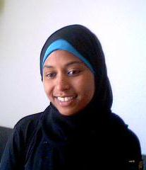
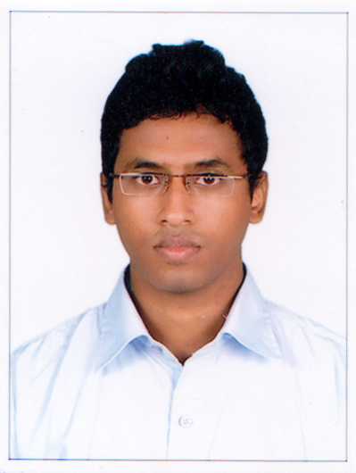
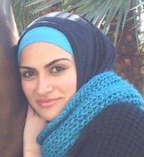

Alumni
2012 - 2013
This is the first class of the 1st Year International Master in Computer Science, which was composed of 12 students from different countries: Lebanon, Ethiopia, Albania, Kosovo, India, Nigeria, Italy and Iraq. Here are some students wishing to share with you who they are, where do they come from and what they will do next. Enjoy it!
|  | My name is Seida Abdella Ahmed and I came From Ethiopia. I studied computer Science for my BSC. My stay in the master one has made me realize the beauty and sweetness of success when acquired after going through many challenges. Moreover, it has given me the chance to know people from diverse culture and regions of the world. But above all, the academic worth goes without saying: it has opened for me new avenues in my quest to become an expert in the field of Computer Science |
|  | Kiran Roy, from India, done bachelor in Information Technology from RCC Institute of Information Technology. Completed the Master 1 from UNS and ll continue Master 2 in the field of Knowledge and Information Systems(KIS) from Polytech Sophia(UNS). |
|  | Myriana Rifai. Previous studies: Bachelor in Computer Science specialty networking at Global University, Lebanon. What am I doing next year: Master 2 Ubinet track |